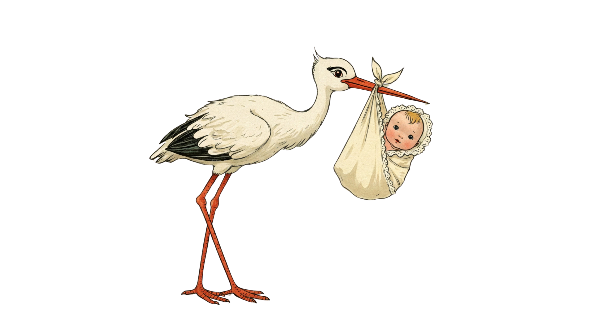

Standing Strong: Your Guide to Awesome Nickname-Proof Baby Names
{/* Removed placeholder date */} Hey there, parents-to-be and name enthusiasts! Let's talk about one of the most exciting, slightly nerve-wracking parts of expecting a little one: choosing the name. It’s a biggie, right? You pour over lists, debate meanings, and imagine calling out that perfect name across a playground.
Amidst all this, have you ever found yourself thinking, "I just love this name exactly as it is"? Maybe you adore the elegance of Eleanor but aren't keen on Ellie, or you think Theodore sounds distinguished, but Theo feels… different. You're not alone! While nicknames are often sweet terms of endearment, steeped in family tradition, or just pop up naturally, some parents actively search for names that tend to stand strong on their own – nickname-proof names.
Nicknames are woven into the fabric of naming history, from kings like Ethelred the Unready to literary characters like Beezus (Beatrice). They can even subtly shape how people perceive someone; studies suggest nicknames might connote more fun but perhaps less seriousness than given names. But what if the full name holds all the magic for you? What if you want a name that resists the common shortening?
Good news! There are plenty of fantastic names less likely to be snipped into a diminutive. This guide is your friendly companion on the hunt for these names without common nicknames. We'll explore why parents seek them out, what makes a name naturally resistant to shortening, and share some awesome examples. Let’s dive into the world of names that stand tall!
Why Go Full Name Only? The Allure of Nickname-Proof Names
So, what’s the draw? Why do some parents specifically look for names that aren't easily nicknamed? It boils down to a few key reasons:
- Love for the Original Sound: Sometimes, it's as simple as falling head-over-heels for the full name's rhythm, sound, and feel. You chose August, not Gus; Miles, not Milo. The complete name just resonates perfectly.
- Dodging Unwanted Diminutives: Let's be real, not all nicknames are created equal in everyone's eyes. You might love the name Richard but strongly dislike Rick or Dick. Or perhaps Elizabeth is your dream name, but you just can't warm up to Liz, Beth, or Ellie. Choosing a name without these common short forms sidesteps the issue. Parents might feel more comfortable knowing they can often gently guide usage back to the full name if an unwanted nickname starts creeping in, especially outside the immediate family circle.
- Seeking a Certain Formality (with a Twist): Some parents feel a full, unshortened name carries a more formal or "grown-up" vibe, potentially beneficial in future professional settings. It's an interesting thought, especially when considering research suggesting nicknames might be perceived as less successful, even if more fun. Perhaps seeking that formality is partly about wanting to ensure their child is perceived in a certain way later in life. Of course, this is subjective – plenty of highly successful people go by nicknames (think Bill Gates or Jamie Oliver), and shorter names are increasingly common in all walks of life.
- Simplicity and Clarity: Using one name consistently avoids potential mix-ups. Having a legal name on documents and a different name used daily can sometimes lead to confusion or the need for constant correction at school, work, or even with official forms. For some parents, the simplicity of "what you see is what you get" is appealing. This desire for clarity highlights a fundamental difference in naming philosophy compared to parents who choose longer names specifically to provide nickname options – the latter group values giving their child flexibility and choice as they grow, while the former prioritizes the consistency and integrity of the original name choice.
- Standing Out: In some cases, the full version of a name might be less common than its popular nickname (think Alexandra vs. Alex). Choosing the full, less-nicknamed version can be a way to select a more unique baby name.
Choosing a nickname-proof name can feel like asserting a little bit of control in the wonderfully unpredictable journey of parenthood. It's less about being anti-nickname and more about being pro-the-specific-name you fell in love with.
The Anatomy of a Nickname-Resistant Name
Okay, name detectives, let's uncover the secrets! What makes some names naturally fend off shortening? It's not magic, but a combination of factors:
- Brevity is King: This is a big one! Many short baby names, often just one or two syllables, are inherently hard to shorten further. Think Maeve, Jude, Claire, Leo, Luke, or Ivy. Where would you even start?
- "Feels Complete" Phonetics: Some names, regardless of length, just sound finished. Their phonetic structure doesn't have obvious breaking points or easy sounds to lop off. Names like Ezra, Owen, Cora, or Miles often have this quality – they flow in a way that feels complete and resists intuitive chopping.
- No Common Traditional Diminutive: Unlike William (Will, Bill) or Catherine (Kate, Katie, Cat), some names simply lack a long-established, widely recognized short form. Think Simone, Harvey, or Ingrid. While new nicknames can always emerge for any name, the absence of a go-to, culturally ingrained short form acts as a significant barrier to automatic nicknaming.
- Word & Surname Origins: Names borrowed directly from the dictionary (word names like Fox, Wren, River, Sage) or from surnames (Sawyer, Ellis, Murphy, Rowan) often maintain their distinct identity and resist being turned into something else. They feel less like traditional given names ripe for shortening.
Table: Nickname Resistance Cheat Sheet
| Feature Contributing to Nickname Resistance | Why it Works | Examples |
|---|---|---|
| Short Length (1-2 Syllables) | Already concise, little to shorten intuitively. | Jude, Maeve, Leo, Claire |
| "Complete" Phonetic Flow | Sounds don't easily break into shorter segments. | Ezra, Owen, Cora, Miles |
| No Common Traditional Diminutive | Lacks a widely recognized, standard short form. | Simone, Harvey, Ingrid |
| Word Name Origin | Carries a distinct identity as a noun/concept. | Fox, Wren, River, Sage |
| Surname Name Origin | Often feels more formal and less 'nicknameable'. | Sawyer, Ellis, Murphy, Rowan |
Remember, these are tendencies, not iron-clad rules! But names strong in these features are definitely your best bet if you're aiming for the full name to stick.
Meet the Unshortenables: Nickname-Proof Names We Love
Ready for some inspiration? Here are some fabulous names, spanning different styles, that tend to stand strong without common nicknames. We've included origins and meanings for that extra spark!
(Remember: "Nickname-proof" means less likely to get a standard shortening, not impossible!)
For Girls:
- Ada: (German origin, meaning "noble") - Short, sweet, and vintage chic.
- Blair: (Scottish origin, meaning "dweller on the plain") - Sleek, sophisticated, and concise.
- Carmen: (Latin origin, meaning "song") - A longer name, but one that typically isn't shortened.
- Claire: (French origin, meaning "clear, bright") - Classic, elegant, and complete in one syllable.
- Cora: (Greek origin, meaning "maiden") - Old-fashioned charm meets modern simplicity.
- Esme: (French/Persian origin, meaning "esteemed" or "emerald") - Gentle and sophisticated.
- Flora: (Latin origin, meaning "flower") - A lovely nature name that stands on its own.
- Greer: (Scottish origin, meaning "watchful") - Uncommon, strong, and streamlined.
- Hazel: (English origin, from the hazel tree) - Warm, earthy, and stylish.
- Ingrid: (Norse origin, meaning "fair; Ing's beauty") - A strong Scandinavian choice.
- Iris: (Greek origin, meaning "rainbow") - A vibrant floral name full of personality.
- Ivy: (English origin, from the ivy plant) - Short, sweet, and nature-inspired.
- Jane: (English origin, meaning "God is gracious") - A timeless classic that needs no shortening.
- June: (Latin origin, named after the Roman goddess Juno) - A warm, summery choice.
- Maeve: (Irish origin, meaning "she who intoxicates") - Mythic, stylish, and perfectly compact.
- Nora: (Irish/Latin origin, diminutive of Honora/Eleonora) - Quietly stylish and complete.
- Paige: (English origin, meaning "page/attendant") - Crisp, cool, and one syllable.
- Ruby: (Latin origin, from the gemstone) - A vibrant, vintage gem name.
- Simone: (Hebrew origin, meaning "hearkening") - Elegant and rarely shortened.
- Thea: (Greek origin, meaning "goddess") - Short, strong, and ethereal.
For Boys:
- Arlo: (Origin uncertain, possibly German or English) - Friendly, upbeat, and increasingly popular.
- Beau: (French origin, meaning "handsome") - Charming and complete in one syllable.
- Clark: (English origin, meaning "scribe, clerk") - Strong, classic, and straightforward.
- Dean: (English origin, meaning "valley") - Cool, retro, and concise.
- Eli: (Hebrew origin, meaning "ascended" or "my God") - Short, strong, and popular.
- Ezra: (Hebrew origin, meaning "help") - Biblical roots with a fresh, modern sound.
- Finn: (Irish origin, meaning "fair or white") - Energetic, charming, and mythic.
- Grant: (Scottish/French origin, meaning "large, great") - Solid, sophisticated, and nickname-resistant.
- Harvey: (French origin, meaning "battle worthy") - A vintage choice that stands alone.
- Hugo: (German origin, meaning "mind, intellect") - Friendly yet traditionally masculine.
- Jude: (Hebrew/Latin origin, meaning "praised") - Modern, cool, and compact.
- Kai: (Hawaiian origin, meaning "sea") - Short, versatile, and globally appealing.
- Leo: (Latin origin, meaning "lion") - Strong yet friendly, popular and punchy.
- Luke: (Greek origin, meaning "from Lucania") - A timeless biblical classic.
- Miles: (Latin/German origin, meaning "soldier" or "merciful") - Cool, polished, and classic.
- Neil: (Irish origin, meaning "cloud" or "champion") - A straightforward classic.
- Owen: (Welsh origin, meaning "young warrior; well-born") - Resonant, popular, and complete.
- Reid: (Scottish origin, meaning "red-haired") - A crisp surname-name.
- Rhys: (Welsh origin, meaning "ardor") - A strong, sophisticated single-syllable name.
- Seth: (Hebrew origin, meaning "appointed") - A gentle but strong biblical name.
Gender Neutral:
- Aspen: (English origin, from the tree name) - Nature-inspired and serene.
- Ellis: (Welsh/English origin, meaning "benevolent") - A smooth surname-name gaining popularity.
- Quinn: (Irish origin, meaning "descendant of Conn; chief leader, intelligence") - Crisp, cool, and versatile.
- River: (English origin, from the body of water) - Flowing, natural, and evocative.
- Rowan: (Irish/Scottish origin, from the tree name) - Strong nature connection, works well for any gender.
- Sage: (Latin origin, meaning "wise" or from the herb) - Calm, grounded, and chic.
- Sawyer: (English origin, meaning "woodcutter") - A friendly occupational surname-name.
- Sloane: (Irish origin, meaning "raider") - Sleek, sophisticated, and stylish.
- Wren: (English origin, from the bird name) - A sweet, subtle nature choice.
Plot Twist! When Nicknames Crash the Party Anyway
Okay, deep breath. You've chosen the perfect, seemingly unshortenable name like Liam or Eve. And then... Aunt Carol starts calling him "Li-Li" or Grandpa affectionately dubs her "Evie-Bear". Whaaat?
Here's the truth: while you can choose a name that resists common shortening, it's nearly impossible to guarantee no nickname ever. Some people are just natural nicknamers! But often, the nicknames that pop up for these "strong" names are different from the standard diminutives you aimed to avoid. They usually fall into a few categories:
- Pet Names: These are the silly, sweet, often nonsensical names born from pure affection – think "Sweet Pea," "Buddy," "Sunshine," or even family inside jokes like "Hedgehog" or "Anna-Banana". These are typically used only by close family and are more about expressing love for the baby stage than renaming the person. They often fade or change as the child grows.
- Spontaneous Creations: Sometimes nicknames arise from personality ("Sparky"), physical traits ("Blue" for blue eyes), or specific events. These are organic and unique to the individual. (Word of caution: sometimes these can be unflattering, like the unfortunate examples found in some legal cases).
- Affectionate Shortening (Even When Difficult): Yes, sometimes people will find a way! That determined nicknamer might turn Miles into "Milo" or Wren into "Winnie."
So, what if this happens?
- The Upside: Often, these unique nicknames are signs of closeness and affection. A special name between a child and a grandparent can be a cherished part of their bond.
- The Downside: It can be frustrating if you strongly prefer the full name. And there's always the small risk of a nickname you genuinely dislike emerging.
The key takeaway here is to distinguish between the common diminutives you likely wanted to avoid (like Will for William) and these more idiosyncratic pet names or spontaneous creations. Your goal of avoiding standard shortening was likely successful! As for the unexpected pet names, you can often gently guide usage ("We're actually just calling her Maeve") especially with people outside your inner circle, though many parents choose to let special family nicknames slide.
Your Name, Your Choice: Finding Your Naming Style
Ultimately, the journey to finding the perfect name is deeply personal. Thinking about nicknames helps clarify your own naming style. Ask yourself:
- Do I really love this name exactly as it is, and would I be bothered if people tried to shorten it? (You might be a Full Name Fanatic!)
- Do I like the idea of a formal name but also want my child to have nickname options later? Or do I adore a specific nickname and want a longer name to go with it? (Hello, Nickname Navigator!)
The Full Name Fanatic might gravitate towards names like Claire, Hugo, or Simone. They prioritize the integrity of the chosen name and accept the small risk of random pet names popping up.
The Nickname Navigator might choose Elizabeth with the intention of calling her Bess, or August knowing Gus is an option. They value flexibility and giving their child choices down the road.
There's absolutely no right or wrong way! Both approaches are valid and stem from different priorities – parental preference and clarity versus future flexibility for the child. Understanding your own preference is key. Think of it less as solving a "problem" and more as discovering your family's unique naming philosophy.
(Maybe take a quick mental quiz: If someone automatically shortened your chosen name, would your reaction be a gentle correction, an internal eye-roll, or totally fine?)
Conclusion: A Name That Rings True
Choosing your baby's name is a journey filled with possibilities. Whether you land on a name designed to stand strong and solitary like Jude or Flora, or one that offers a bouquet of potential nicknames, the most important thing is that the name resonates with you.
Don't get too bogged down in the "rules." While understanding the characteristics of nickname-proof names can be helpful, let your heart guide you. The name you choose with love, the one that makes you smile when you say it, the one that feels right for your little one – that's the perfect name. Trust your instincts and enjoy this special process!
Now over to you! What are your favorite nickname-proof names? Share them in the comments below!
{/* Works Cited Section */}Works Cited
- Nickname-Proof Boy Names | Nameberry, https://nameberry.com/blog/finding-nickname-proof-boy-names-with-nicknames
- Get the name of the dog – and the nickname - Poynter, https://www.poynter.org/reporting-editing/2014/get-the-name-of-the-dog-and-the-nickname/ {/* ... (Include all other citations from the document) ... */}
- Street Names and Nicknames - UNC School of Government - University of North Carolina, https://www.sog.unc.edu/blogs/nc-criminal-law/street-names-and-nicknames
Share this post!


Share this post!
{/* Back link */}